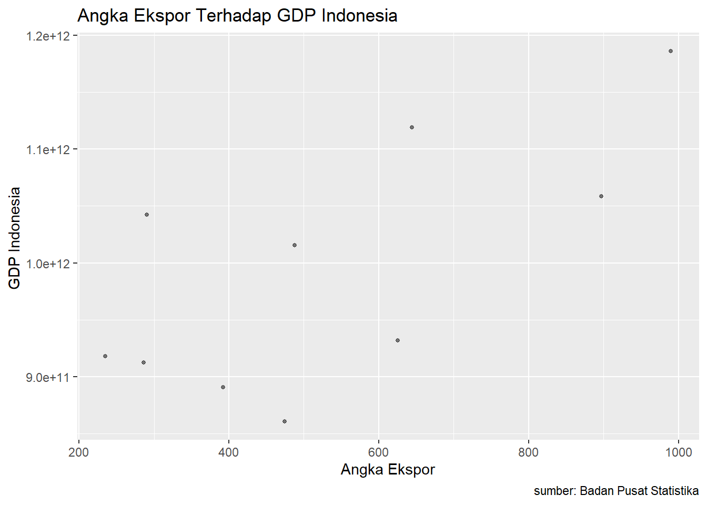

Analisis Pengaruh Ekspor Sarang Burung Indonesia ke Negara Hongkong Terhadap GDP Indonesia
Metode Penelitian Politeknik APP Jakarta
Author
Kholip Bayu Anggoro
Published
January 20, 2023
1 Pendahuluan
1.1 Latar belakang
Perkembangan ekonomi bisa dimaksud selaku peningkatan nilai GDP( Groos Domestic Product) serta GNP( Gross National Product) tanpa memandang apakah peningkatan tersebut lebih besar ataupun lebih kecil dari peningkatan jumlah penduduk ataupun pergantian pola serta struktur ekonomi terjalin ataupun tidak. Perkembangan ekonomi tersebut ialah salah satu permasalahan klasik yang banyak di natural oleh negeri tumbuh, tidak terkecuali Indonesia. Definisi lain dari perkembangan ekonomi ialah mengartikan perkembangan ekonomi selaku sesuatu proses kenaikan penciptaan benda serta jasa dalam aktivitas ekonomi warga sesuatu daerah( Djojohadikusumo, 1994). Kenaikan perkembangan ekonomi dilihat dari peninkatan hasil penciptaan serta pemasukan yang diterima oleh warga.
1.2 Ruang lingkup
Lingkup bahasan ini tentang Ekspor Sarang Burung Negara Indonesia terhadap Negara Hongkong sahaja, dikarenakan sumber data yang terbatas.
1.3 Rumusan masalah
Apakah ekspor Sarang Burung mempengaruhi GDP Indonesia?
Apakah ekspor Sarang Burung ke Negara Hongkong setiap tahunnya naik atau turun?
Apakah Negara Indonesia mengekspor Sarang Burung ke Hongkong setiap tahunya
1.4 Tujuan dan manfaat penelitian
Tujuan dari riset ini merupakan buat mengenali seberapa besar pengaruh ekspor Sarang Burung Indonesia ke Cina dalam periode tahun 2012- 2021 terhadap GDP Indonesia dalam periode yang sama serta pula pembaca bisa mengenali kalau ekspor Sarang Burung yang dicoba Indonesia berpotensi baik serta layak buat di optimalkan dalam kapasitas ekspornya ke Hongkong. Khasiat riset ini merupakan supaya pembaca paham seberapa besar pengaruh ekspor Sarang Burung yang dicoba pemerintah ataupun warga terhadap GDP Indonesia
1.5 Package
Ini tidak wajib ada di packages yang digunakan antara lain sebagai berikut:
1. Analisis pengaruh ekspor terhadap pertumbuhan ekonomi Indonesia
Peningkatan kinerja ekspor Indonesia dapat dilakukan dengan berbagai cara, salah satunya adalah dengan perbaikan sistem administrasi ekspor, peningkatan riset dan pengembangan produk Indonesia, peningkatan sarana dan prasarana infrastruktur, stabilitas nilai tukar dan perluasan pasar non tradisional, termasuk perbaikan struktur ekspor komoditas.
2. Analisis Pengaruh Ekspor dan Kurs Terhadap Cadangan Devisa Indonesia
Dengan adanya perdangan internasional dapat menambah cadangan devisa negara misalnya dengan melakukan ekspor. Cadangan devisa merupakan jumlah keseluruhan aktiva luar negeri yang dapat digunakan kapan saja untuk membiayai ketidakseimbangan neraca pembayaran, melakukan intervensi di pasar valuta asing dalam rangka menjaga stabilitas moneter dan tujuan lainnya.cadangan devisa dikuasai oleh otoritas moneter.
3 Metode penelitian
3.1 DATA
Data GDP Indonesia
2012
2013
2014
2015
2016
2017
2018
2019
2020
2021
9,1787E+11
9,12524E+11
8,90815E+11
8,60854E+11
9,31877E+11
1,01562E+12
1,0423E+12
1,1191E+12
1,05869E+12
1,18609E+12
Data Ekspor Indonesia ke Hongkong
2012
2013
2014
2015
2016
2017
2018
2019
2020
2021
235,2
286,4
392,3
474,4
625,5
487,8
290,4
644,1
897,2
989,9
dat<-read_excel('uasmetopel.xlsx')ggplot(data=dat,aes(x=Ekspor,y=GDP)) +geom_point(alpha=0.5, size=1, color='black') +# setiap nambah command, selalu kasih tanda +labs(title="Angka Ekspor Terhadap GDP Indonesia",x="Angka Ekspor",y="GDP Indonesia ",caption ="sumber: Badan Pusat Statistika")#

Figure 1: City and highway mileage for 38 popular models of cars.Color by number of cylinders
3.2 Metode analisis
Metode yang dipilih adalah regresi univariat atau Ordinary Least Square (OLS) dengan 1 variabel independen. Penelitian ini merbaksud mencari hubungan antara hwy dan cty. Spesifikasi yang dilakukan adalah:
\[
y_{t}=\beta_0 + \beta_1 x_t+\mu_t
\] di mana \(y_t\) adalah hwy dan \(x_t\) adalah cty.
4 Pembahasan
4.1 Pembahasan masalah
Dikarenakan pada penelitian ini saya menggunakan metode OLS, maka saya hanya menghubungkan angka Ekspor Indonesia ke Hongkong tahun 2012-2021 dengan angka GDP Indonesia pada periode yang sama.
Call:
lm(formula = GDP ~ Ekspor, data = dat)
Residuals:
Min 1Q Median 3Q Max
-1.160e+11 -5.682e+10 -8.644e+07 5.415e+10 1.185e+11
Coefficients:
Estimate Std. Error t value Pr(>|t|)
(Intercept) 8.401e+11 6.269e+10 13.401 9.21e-07 ***
Ekspor 2.884e+08 1.070e+08 2.694 0.0273 *
---
Signif. codes: 0 '***' 0.001 '**' 0.01 '*' 0.05 '.' 0.1 ' ' 1
Residual standard error: 8.264e+10 on 8 degrees of freedom
Multiple R-squared: 0.4756, Adjusted R-squared: 0.4101
F-statistic: 7.256 on 1 and 8 DF, p-value: 0.02734
5 Kesimpulan
Dari hasil regresi diatas dapat diketahui bahwa Sarang Burung Indonesia ke Hongkong terhadap GDP Indonesia adalah 8,264E+10 atau sebesar 0,47% terhadap total rata rata GDP Indonesia terhadap tahun 2012-2021